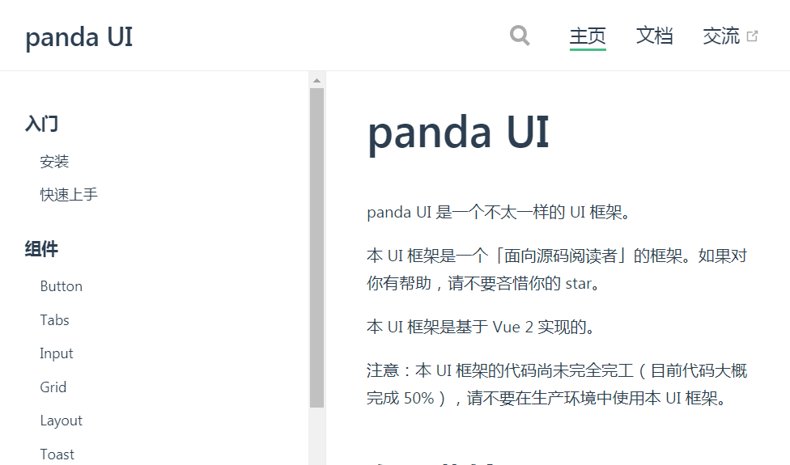
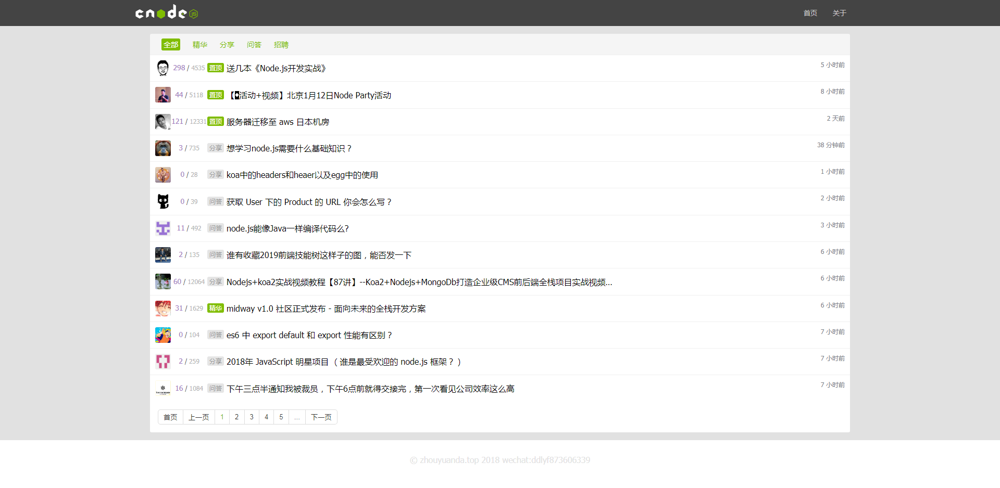
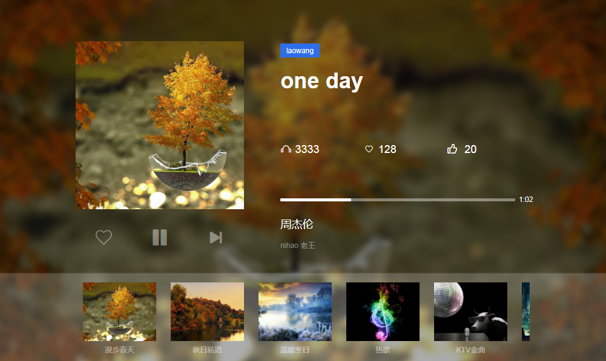
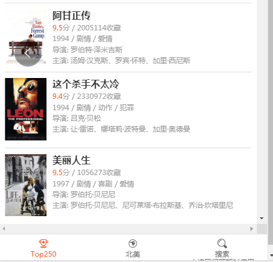

项目经历
panda UI
- 项目介绍：该项目是参照 Framework7、Ant Design、Element UI、iView 等 UI 库思路，做的一个基于 Vue 的简易 UI 组件库，目前已支持按钮、输入框、网格、布局、Toast、Tabs、Popover、手风琴等组件。每个组件均经历从需求分析到 Mocha 单元测试，并用 TravisCI 实现持续集成，最终以 VuePress 为基础制作官方文档，发布于 npmjs.org。完成该项目使我对 Vue 的常用特征更加熟悉，同时提升了自己对前端工程化流程以及单元测试重要性的深刻理解，近一步开源文化。
- 技术：Vue.js/ VuePress/ ES6/ Parcel/ Npm Scripts/ Mocha/ SCSS/ TravisCI
- 项目源码：github.com/wyx318/panda01
- 浏览链接：wyx318.github.io/panda01/
CNode 社区
- 项目介绍：该项目使用 Vue 还原 CNode 官方社区，项目调用 CNode 官方社区提供的 API，以 Vue CLI 创建项目模版，使用 Axios 获取数据，使用 Vue Router 进行前端路由的切换及传参，使用 watch 监听路由的变化，Webpack 打包。
- 技术栈：Vue CLI/ Vue2/ Vue Router/ Axios/ ES6/ Npm/ SCSS
- 项目源码：github.com/wyx318/ccnode
- 浏览链接：wyx318.github.io/ccnode
芊芊音乐电台
- 项目介绍：一款大屏响应式webapp音乐电台，支持跨平台，多种屏幕尺寸音乐播放器百度电台 API 为服务器域名提供支持，主要包含FM模块(音乐播放) footer模块(专辑展示)。项目逻辑简单，页面清新，提供多种音乐电台类型，欢迎尝试。
- 项目源码：github.com//wyx318/qianqianmusic
- 浏览项目：wyx318.github.io/qianqianmusic/
filmme电影
- 项目介绍：是一个使用纯原生 JS 开发的，移动端豆瓣电影排行榜的小作品。该作品主要是通过豆瓣电影API，将电影排行TOp250，及北美电影排行榜显示在页面上，是我在学习原生 JS 及 AJAX 过程中开发的小工具。提供在 PC 及手机端在线浏览电影排行榜等功能
- 项目源码：github.com/wyx318/film
- 浏览链接：github.com/wyx318/film
关于我
熟练 HTML、DIV + CSS 的页面布局，能根据设计图像素级完成页面制作
熟悉 HTML 5 及语义化，了解 Canvas 动画制作，掌握 CSS 3 动画、过渡效果等常用技术熟悉原生 JavaScript，会使用 ES6+ 常用规范，了解 TypeScript，了解 jQuery 常用 API 及思想
熟悉 Vue 常用功能，理解如生命周期、组件、虚拟 DOM、数据响应式等概念，能够使用 Vue 全家桶开发项目，对 React 有一定了解
熟悉模块化、工程化开发流程，能够配置 Webpack
有移动端开发经验，会使用REM、vw/ vh、响应式 等技术制作适配手机设备的页面
了解 HTTP 相关知识，了解常见的 Web 性能优化方案
了解 Node.js，能够开发简单的后台服务器
熟练使用 VsCode、WebStorm、Scss、Git 等开发工具
工作经历
2018.11-2019.10
深圳热度科技有限公司 职位：网络管理与运营
工作职责：
1. 对公司官网及新媒体平台进行运营管理推广。
2. 负责组织搜集相关行业政策、竞争对手信息、客户信息等，分析市场发展趋势。
3.与公司开发人员进行及时对接完善公司产品用户体验。